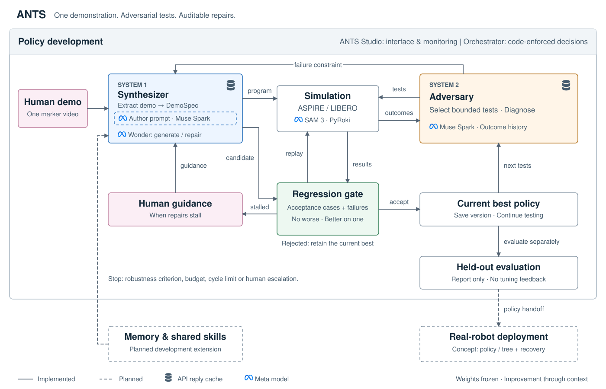
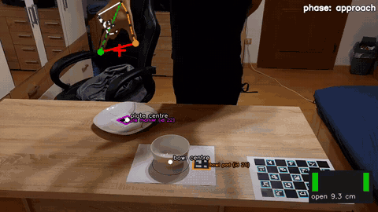
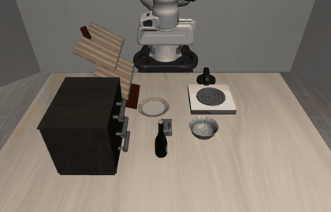
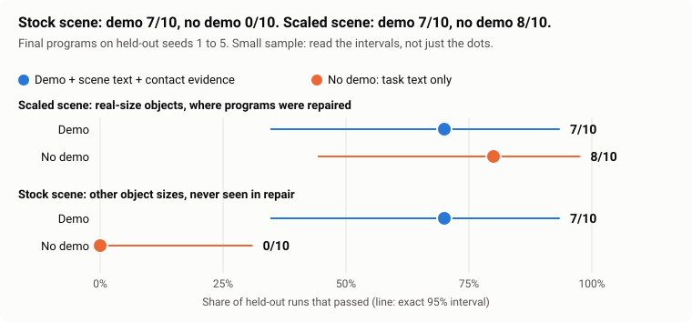
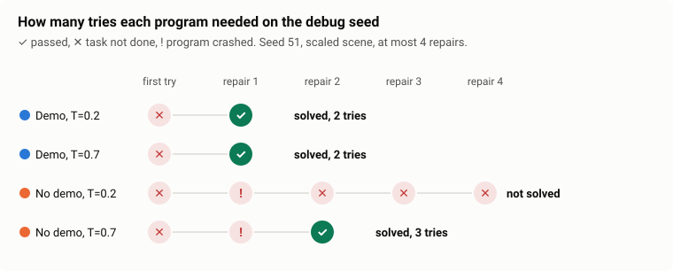
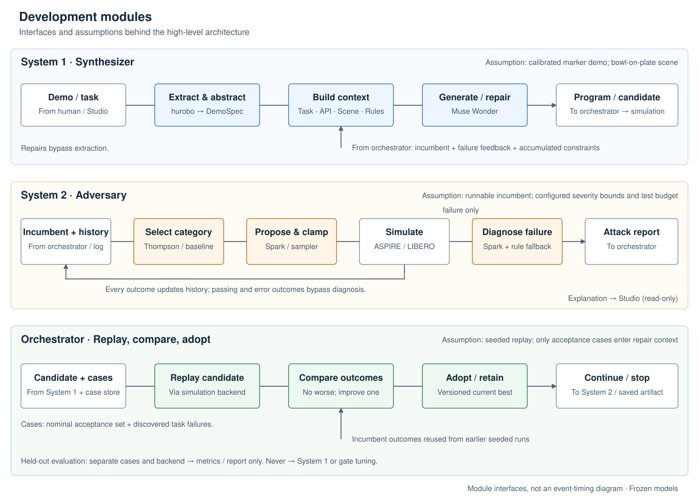
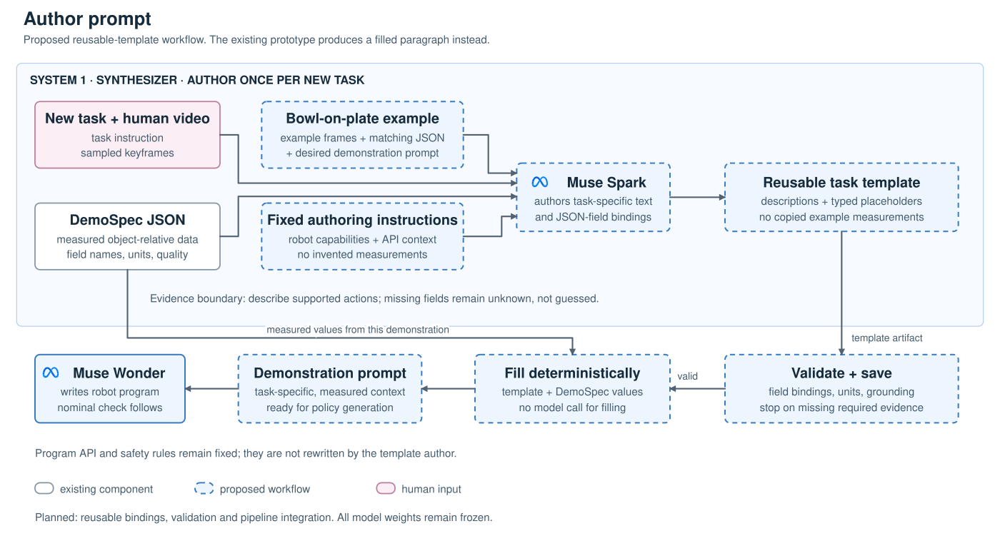
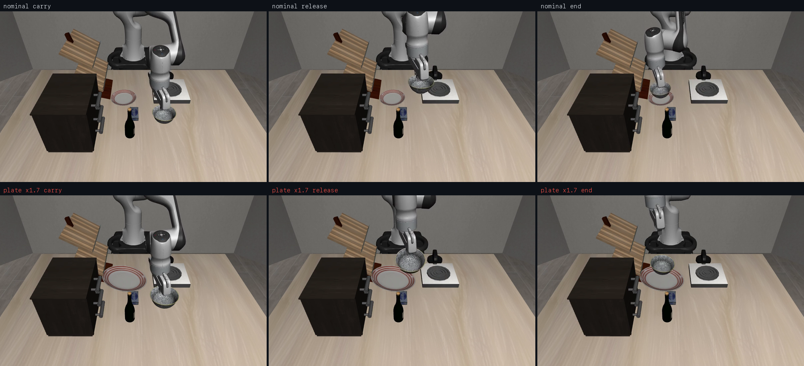
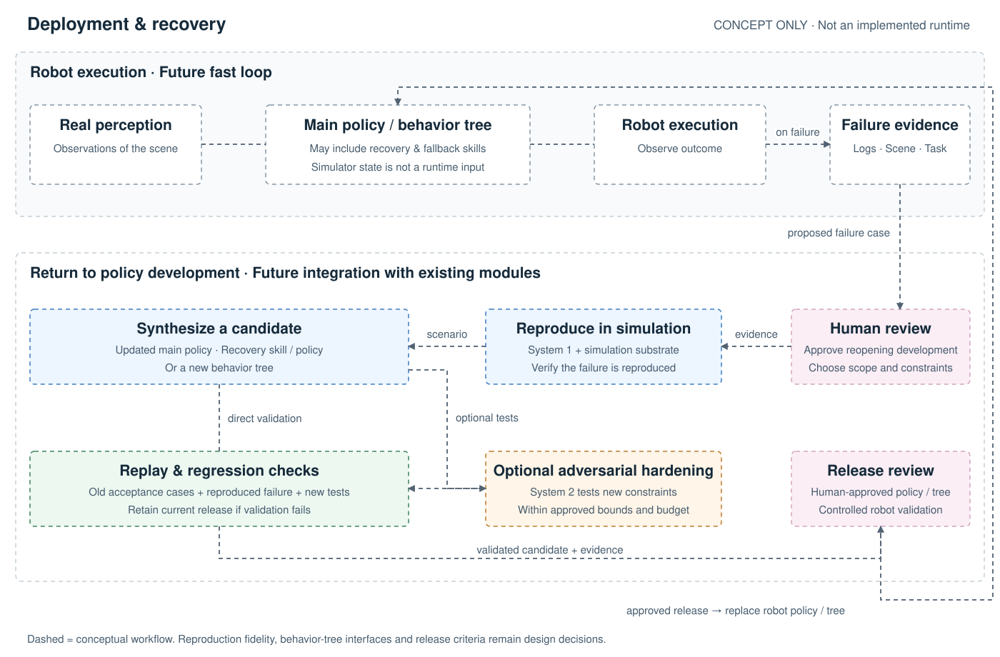

Submitted Meta Global AI Hackathon
Show a robot a task once on video. A frozen model writes the robot program. A second system attacks it until the edge cases are covered. Nothing is trained. The skill improves through context only.
Submitted to the Meta Global AI Hackathon, theme Push the Frontier: use Meta's models to tackle challenges in robotics and beyond. ANTS pushes it with Meta's own models in both systems: Muse Wonder writes the robot program, Muse Spark plans and diagnoses the attacks, and SAM 3/3.1 gives the robot its perception.

A text prompt says "put the bowl on the plate". It cannot say where to grasp, how high to carry or where to release. A human video can. We track the hand and objects in one demo and turn them into numbers relative to object size: grasp the rim, approach from above, carry height, release over the plate. The VLM writes the robot program from these numbers instead of guessing them.


"Put the bowl on the plate" plus one tracked human demo. The numbers (grasp point, approach direction, carry height, release spot) come from the video, relative to object size.
"Put the bowl on the plate" and nothing else. The VLM has to guess where to grasp, how high to carry and where to release.


Both arms were repaired on the scaled objects. There, text only catches up (8/10 vs 7/10), but on the debug seed the demo programs solved it in 2 tries while one text-only program never did. On other object sizes the text-only program fails (0/10), while the demo program holds (7/10): the video gives relative numbers that transfer across sizes. This is still an early hint, with one task, one clip and five seeds. The demo can also come from teleoperation, not only from video.
Two systems run independently, talk through a small contract and share one goal: a policy that does not break.
Each system makes the other better: the generator hardens the program, the adversary keeps finding what the hardening missed. When the loop stalls it asks a human, and the answer becomes a rule.
Note: I worked on the synthesizer and the demo-to-program idea. I did not look into the technical details of the adversary, which is Daniel's part.



v0 is the first candidate policy generated and tested by
System 1. Each accepted rewrite becomes the next version (v1, v2, ...).
With a larger plate, SAM 3 measured the plate 11 cm tall instead of 2 cm.
The program released the bowl about 9 cm too high. Muse Spark traced it to
one line, plate_top_z = max(...), Muse Wonder rewrote it and
the gate accepted the fix.
| Question | Result | From |
|---|---|---|
| One demo gives a working program? | v0 passes 47/50 held-out perturbed cases | 759 LIBERO rollouts |
| Adversary finds a real weak spot? | 0 failures in 599 rollouts with correct perception, 11 in 26 with a mis-read plate | one blind spot |
| Gate blocks bad fixes? | 3 of 3 bad rewrites rejected | logged runs |
| Fix generalises? | Not yet. Held-out size cases: v0 49/50, v1 47/50 | gate saw only 4 cases |
| Adaptive beats uniform testing? | Not answered. 2/200 vs 1/200 failures | v0 fails too rarely |
Held-out cases use scene seeds the system never tuned on. Cost: about $12 of model tokens for the whole study. Limits are stated, not hidden.
A single policy that handles every edge case becomes long, hard to read and hard to reuse. The architecture can instead let System 1 write a main policy plus small recovery policies. This works in the development phase and later in deployment: a production failure is reproduced in simulation, the adversary hardens the fix, and the new recovery skill is released after validation. A final step could compose main and recovery skills into a behavior tree, which keeps each part modular and reusable. Not built yet.

Alfredo: synthesizer and demo prompt. Daniel: adversary. Alfredo Wijaya Hardjoprawiro and Daniel Totolici. Demonstrations come from hurobo, which turns phone videos of a human hand into robot demos.